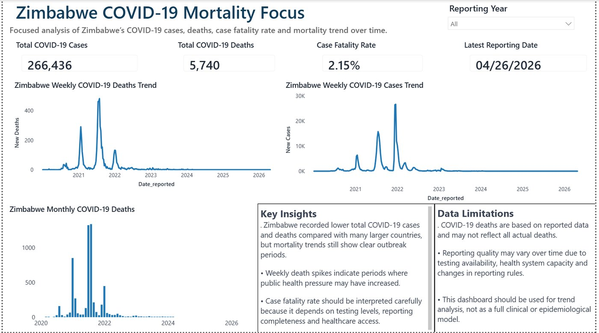

Health data analysis
COVID-19 Mortality Analysis
An analysis of WHO COVID-19 data covering reported cases, deaths, case fatality rates and mortality trends, with an interactive five-page Power BI dashboard.
- Global overview and country comparison
- Zimbabwe-focused mortality trends
- Case fatality rate calculations
- Public health insights and data limitations
- Excel
- SQL
- Power BI
- DAX
- WHO data